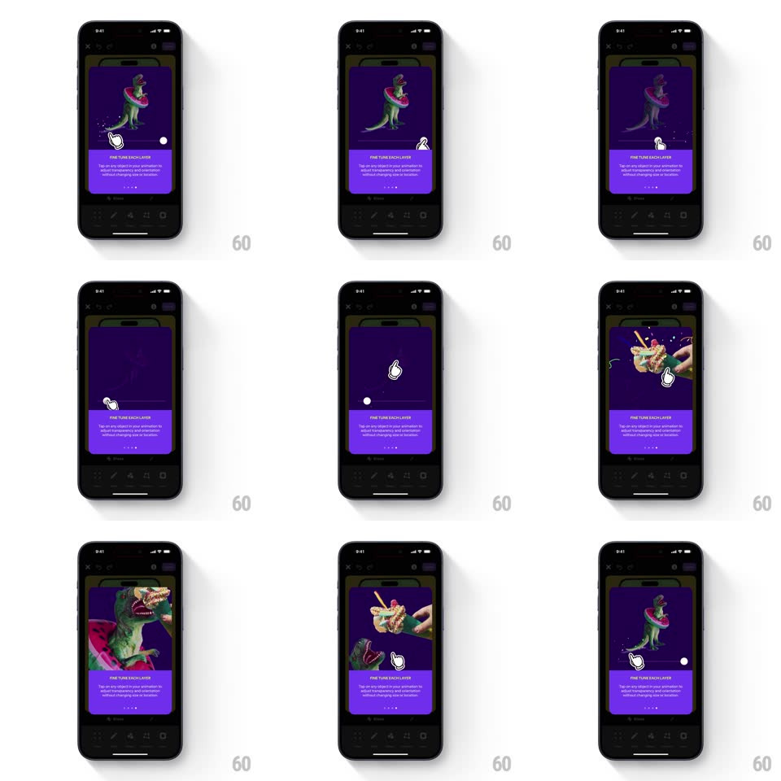

Media
Frame-by-frame

Rebuild this interaction 1:1: Shuffles' animator tooltip - an auto-playing purple coaching card ("FINE TUNE EACH LAYER") demonstrates layer selection: a simulated finger taps the dinosaur layer in the collage, a pulse ring fires, and the layer isolates while the rest dims.

Rebuild this interaction 1:1: Shuffles' animator tooltip - an auto-playing purple coaching card ("FINE TUNE EACH LAYER") demonstrates layer selection: a simulated finger taps the dinosaur layer in the collage, a pulse ring fires, and the layer isolates while the rest dims.
## Integration
Integration: stack-agnostic spec - springs given as stiffness/damping, timed motions as duration + curve; map every value to your framework and animation library of choice.
## Scene
The dark Shuffles animator canvas holding a collage (toy dinosaurs - a green T-rex and a dino holding an ice cream) sits behind a purple tooltip card at the bottom: bold caption "FINE TUNE EACH LAYER", body "Tap on any object in your animation to adjust the opacity and orientation without changing size or location", page dots, and a Done button. The animator toolbar peeks below the card.
## Motion spec
Pattern: auto-playing gesture demo inside the tooltip's preview.
- The demo loops above the card: a white finger cursor glides in (300ms, ease-out) and presses on the dinosaur layer (finger scales 1 -> 0.85, 120ms).
- On press, a pulse ring radiates from the touch point (expands to 60px, fades, 400ms) and the tapped layer isolates: the rest of the collage dims to 30% while the selected layer keeps full color and gains a thin highlight outline.
- The isolated layer does a small attention wiggle (rotate +/-3deg, twice, 400ms) showing it can be oriented.
- The demo resets (dim lifts, 300ms) and loops after a 1s pause.
- The card itself rose on entry (spring ~340/24, 350ms) over the dimmed canvas.
## Calibration
- The finger cursor is the teacher - its press and the pulse must land on the layer's center.
- Isolation is a lighting change, not a cutout - the layer stays in place, everything else dims.
## Reduced motion
Static frame showing the isolated state.
## Don't miss
- The dimmed background layers stay faintly visible - context is never fully lost.
- Page dots under the caption show this is one step of a set - the card does not cover them.